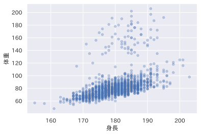
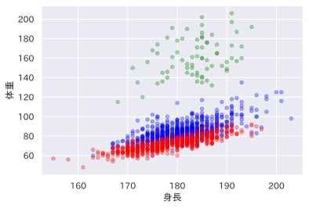
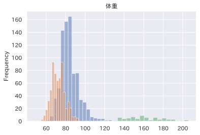
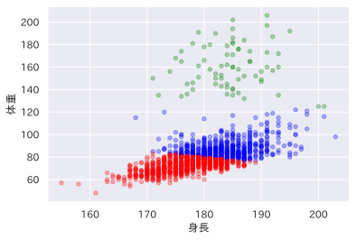
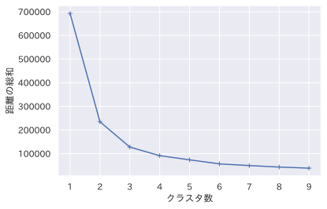

6. クラスタリングしてみよう¶
クラスタリング（clustering）とは、機械学習における教師なし学習の1種で、データ間の類似度にもとづいて、データをグループ分けする手法です。
今回は、KMean法を通してクラスタリングを学んでいきましょう。
モジュールの準備
[2]:
import pandas as pd
import numpy as np
import matplotlib.pyplot as plt
import seaborn as sns
try:
import japanize_matplotlib #日本語化 matplotlib
sns.set(font="IPAexGothic") #日本語フォント設定
except ModuleNotFoundError:
pass
6.1. クラスタリング¶
クラスタリングとは、データ間の類似度にもとづいて、データをグループ分けする手法です。クラスタリングによってできた、似たもの同士が集まったグループのことをクラスタと呼びます。

活用例
学生をグループ分け
「データ間の類似度にもとづいてデータをグループ分けする」という特徴の活かし方次第で、さまざまな問題に応用できます。
6.1.1. クラスタリングの種類¶
数式で表現すると、下記、最適化問題を解くアルゴリズム[4]。本アルゴリズムでは最小値ではなく初期値依存の極小値に収束する。
\[\operatorname {arg\,min} _{V_{1},\dotsc ,V_{k}}\sum _{i=1}^{n}\min _{j}\left\|x_{i}-V_{j}\right\|^{2}\]
6.2. K-means法の実践¶
[3]:
data = pd.read_csv('bmi.csv')
data.head()
[3]:
| 名前 | 身長 | 体重 | 職業 | |
|---|---|---|---|---|
| 0 | 福井 優也 | 178.0 | 85.0 | B |
| 1 | 九里 亜蓮 | 187.0 | 92.0 | B |
| 2 | 加藤 拓也 | 176.0 | 88.0 | B |
| 3 | 大瀬良 大地 | 187.0 | 93.0 | B |
| 4 | 今村 猛 | 183.0 | 98.0 | B |
[4]:
# 基礎統計量を確認
data.groupby('職業').describe()
[4]:
| 身長 | 体重 | |||||||||||||||
|---|---|---|---|---|---|---|---|---|---|---|---|---|---|---|---|---|
| count | mean | std | min | 25% | 50% | 75% | max | count | mean | std | min | 25% | 50% | 75% | max | |
| 職業 | ||||||||||||||||
| B | 822.0 | 180.705596 | 5.496844 | 163.0 | 177.0 | 180.0 | 184.0 | 203.0 | 822.0 | 83.956204 | 9.561929 | 60.0 | 78.00 | 83.0 | 88.0 | 135.0 |
| F | 643.0 | 178.311042 | 6.641673 | 155.0 | 173.0 | 178.0 | 183.0 | 197.0 | 643.0 | 72.094868 | 7.045603 | 48.0 | 67.00 | 72.0 | 77.0 | 93.0 |
| R | 70.0 | 183.571429 | 5.706776 | 168.0 | 180.0 | 184.5 | 187.0 | 195.0 | 70.0 | 160.842857 | 19.791402 | 115.0 | 146.25 | 160.0 | 175.5 | 206.0 |
6.2.1. 散布図でデータを確認¶
[6]:
data.plot(kind='scatter', x='身長', y='体重', alpha=0.3, c='b')
[6]:
<AxesSubplot:xlabel='身長', ylabel='体重'>

[7]:
colors = ['blue', 'red', 'green']
ax = None
for i, group in enumerate(data.groupby('職業')):
ax = group[1].plot(kind='scatter', x='身長', y='体重', alpha=0.3, c=colors[int(i)], ax=ax)

[8]:
for i, group in enumerate(data.groupby('職業')):
group[1]['身長'].plot(kind='hist', alpha=0.5, bins=20, title='身長')

[9]:
for i, group in enumerate(data.groupby('職業')):
group[1]['体重'].plot(kind='hist', alpha=0.5, bins=20, title='体重')

6.2.2. ３クラスターに分類¶
[11]:
from sklearn.cluster import KMeans
model = KMeans(init='random', n_clusters=3)
model.fit(data[['身長', '体重']])
[11]:
KMeans(init='random', n_clusters=3)
[12]:
model.predict([(170, 80)])
[12]:
array([1], dtype=int32)
[14]:
data['クラスター'] = model.predict(data[['身長', '体重']])
data.head()
[14]:
| 名前 | 身長 | 体重 | 職業 | クラスター | |
|---|---|---|---|---|---|
| 0 | 福井 優也 | 178.0 | 85.0 | B | 0 |
| 1 | 九里 亜蓮 | 187.0 | 92.0 | B | 0 |
| 2 | 加藤 拓也 | 176.0 | 88.0 | B | 0 |
| 3 | 大瀬良 大地 | 187.0 | 93.0 | B | 0 |
| 4 | 今村 猛 | 183.0 | 98.0 | B | 0 |
[15]:
data.groupby('クラスター').describe()
[15]:
| 身長 | 体重 | |||||||||||||||
|---|---|---|---|---|---|---|---|---|---|---|---|---|---|---|---|---|
| count | mean | std | min | 25% | 50% | 75% | max | count | mean | std | min | 25% | 50% | 75% | max | |
| クラスター | ||||||||||||||||
| 0 | 641.0 | 183.686427 | 4.997808 | 168.0 | 180.0 | 183.0 | 187.0 | 203.0 | 641.0 | 87.564743 | 7.786363 | 77.0 | 82.0 | 85.0 | 90.0 | 122.0 |
| 1 | 823.0 | 176.425273 | 4.850459 | 155.0 | 173.0 | 177.0 | 180.0 | 189.0 | 823.0 | 71.798299 | 5.502324 | 48.0 | 68.0 | 73.0 | 76.0 | 83.0 |
| 2 | 71.0 | 184.549296 | 5.961277 | 171.0 | 181.0 | 185.0 | 188.0 | 201.0 | 71.0 | 160.690141 | 19.454409 | 125.0 | 145.5 | 160.0 | 175.0 | 206.0 |
クラスターごとに色分けして散布図
[17]:
ax=None
plt.figure(figsize=(5,5))
for i, gd in enumerate(data.groupby('クラスター')):
ax = gd[1].plot(kind='scatter', x='身長', y='体重', c=colors[i], alpha=0.3, ax=ax)
<Figure size 360x360 with 0 Axes>

6.2.3. エルボー法: 適切なクラスター数を調べる¶
距離の総和
[18]:
print(model.inertia_)
127993.96759674074
[19]:
dist = []
for i in range(1, 10):
km = KMeans(init='random', n_clusters=i)
km.fit(data[['身長', '体重']])
dist.append(km.inertia_)
plt.plot(range(1, 10), dist, marker='+')
plt.xlabel('クラスタ数')
plt.ylabel('距離の総和')
[19]:
Text(0, 0.5, '距離の総和')

クラスター数２の散布図を調べてみよう
[20]:
model = KMeans(init='random', n_clusters=2)
model.fit(data[['身長', '体重']])
data['クラスター'] = model.predict(data[['身長', '体重']])
ax=None
plt.figure(figsize=(5,5))
for i, gd in enumerate(data.groupby('クラスター')):
ax = gd[1].plot(kind='scatter', x='身長', y='体重', c=colors[i], alpha=0.3, ax=ax)
<Figure size 360x360 with 0 Axes>

6.3. コースワーク¶
佐藤 84 45 77 69 48
鈴木 75 69 65 77 69
高橋 69 81 45 82 79
田中 92 75 83 79 62
伊藤 62 91 68 61 93
渡辺 54 63 48 52 50
山本 48 53 71 83 45
中村 77 85 62 55 82
小林 82 88 89 79 85
加藤 47 48 57 53 63
吉田 75 36 85 73 51
山田 66 73 79 65 66
佐々木 64 95 48 59 91
山口 73 86 52 70 77
松本 55 75 63 67 80
Let’s try
2 ** (1//2) が、正しく \(\sqrt{2}\) にならない理由を考えてみよう
(プログラミングの)\(N\)個数える
プログラミングでは、原則、「0から\(N-1\)まで」のように数えます。
6.3.1. 平均点¶
例題（平均点）
期末試験は5人受験した。 点数が40点未満の生徒は全員，補習を受け，成績が40点になった。 5人の平均点を求めよ。
入力例：
10
65
100
30
95
出力例：
68
(解法) リストを使う場合
期末試験を記録する空の得点リスト
scoresを用意する5人分繰り返し、点数を読んで、
scoresに追加する平均点は
sum(scores) // 5